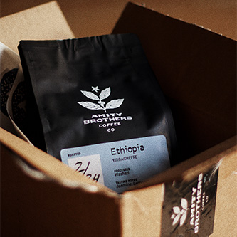

Fine artisanal, organic, sustainable, craft coffee delivered to your door. Hipstirred is a monthly subscription for all your cold-pressed, pour over, French press, siphon pot, and Chemex needs.
Amazing Coffee, Conveniently Delivered Directly to You
Finding a variety of high-quality and sustainably sourced coffees is challenging, but we’re changing that. We locate and test a wide variety of coffee and then send the best to you every month, or you can choose specific coffees in our curated collection.
Premium beans don’t have to come at a premium price. Our purchasing power lets us lock in a great price without sacrificing quality.
Experiment or Get Your Favorites
Like trying different coffees, but also have some favorites you always like to have on hand? We understand! You’re in complete control of what you get. You can choose from specific coffees and whether you want us to send you the current pick of the month. Which coffee will be your favorite?